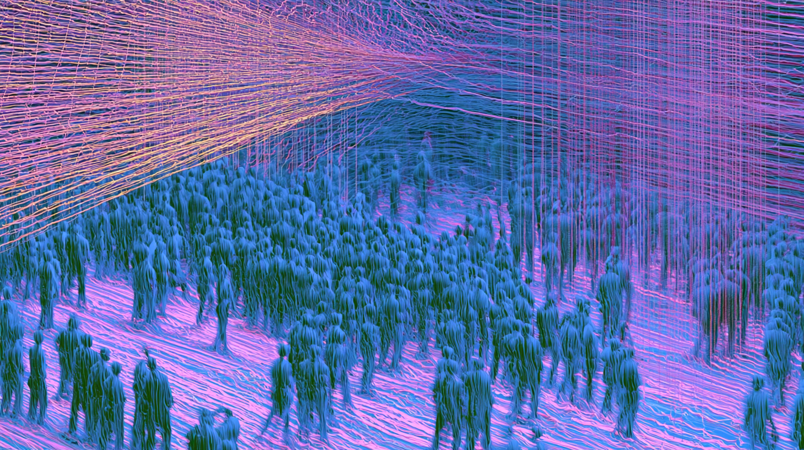
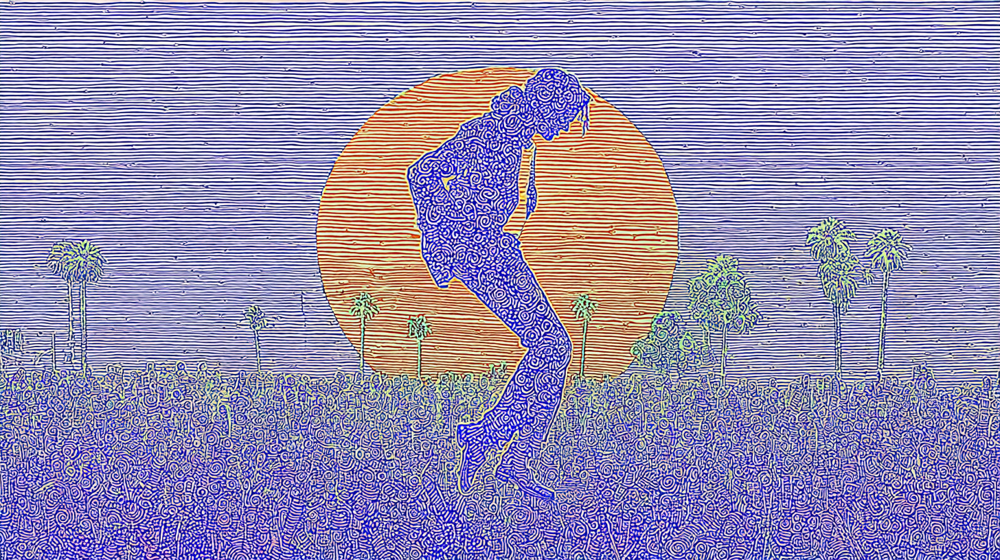

Sound Signal
.
Curating the feed every Monday, Wednesday and Friday
ABOUT
Story Collections
All Stories
Every live collection · latest first

Essay
AI (Re)Maxxxing
11 articles →

Storyline #4
Summer Nostalgia
16 articles →